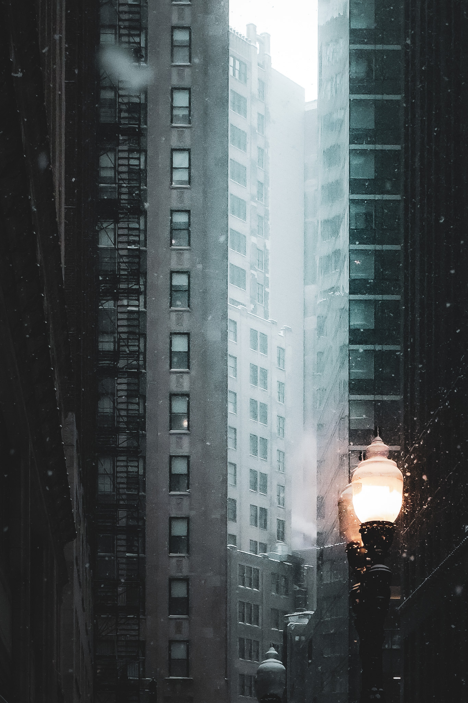

Rafa
Boulder, Colorado
Photographer and filmmaker shaped by classic New York jazz, Japanese art, and a cinematic point of view.



Focus
Personal storytelling, mood, and visuals that feel expressive, cultured, and current.
Approach
Clean framing, strong emotion, and a rhythm influenced by jazz, film, and illustration.
Influences
Classic New York sound, Japanese culture, and anime worlds like Attack on Titan.
Selected Frames
Work shaped by taste, rhythm, and story.

Rafael Cortes, also known as Rafa, is a 16 year old photographer and filmmaker residing in Boulder, Colorado. His work is driven by feeling, pacing, and the kind of visual impact that stays with you after the frame is gone.
He draws inspiration from classic New York jazz, Japanese culture, and anime, bringing those influences into images that feel focused, dramatic, and personal.
View the full portfolio
About
Young eye. Distinct taste.
Rafa is building a visual language rooted in mood, story, and intention. Whether he is working in photography or film, the goal stays the same: create something that feels memorable and fully his own.
Based in Boulder, he brings together a modern visual instinct with influences from music, Japanese art, and anime. The result is work that feels cinematic, expressive, and personal without forcing itself.